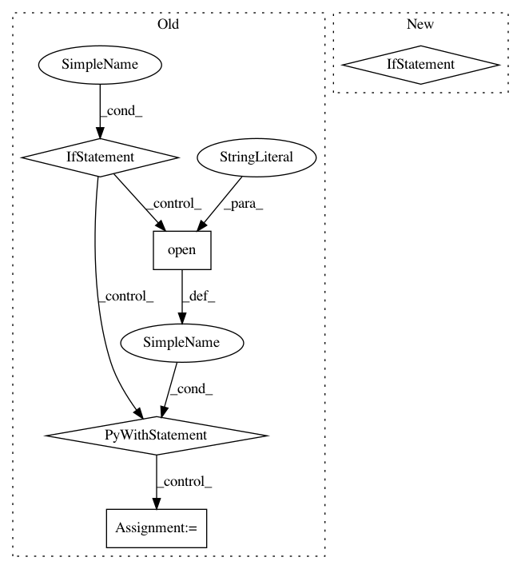

35cf4f0ae774a4aa500318879a1a4d53408ac129,onmt/translate/translation.py,TranslationBuilder,_build_target_tokens,#TranslationBuilder#Any#Any#Any#Any#Any#,36
Before Change
if tokens[i] == tgt_field.unk_token:
_, max_index = attn[i][:len(src_raw)].max(0)
tokens[i] = src_raw[max_index.item()]
if self.phrase_table != "":
with open(self.phrase_table, "r") as f:
for line in f:
if line.startswith(src_raw[max_index.item()]):
tokens[i] = line.split("|||")[1].strip()
return tokens
def from_batch(self, translation_batch):
batch = translation_batch["batch"]
After Change
if tokens[i] == tgt_field.unk_token:
_, max_index = attn[i][:len(src_raw)].max(0)
tokens[i] = src_raw[max_index.item()]
if self.phrase_table_dict:
src_tok = src_raw[max_index.item()]
if src_tok in self.phrase_table_dict:
tokens[i] = self.phrase_table_dict[src_tok]
return tokens
def from_batch(self, translation_batch):
batch = translation_batch["batch"]
In pattern: SUPERPATTERN
Frequency: 3
Non-data size: 5
Instances
Project Name: OpenNMT/OpenNMT-py
Commit Name: 35cf4f0ae774a4aa500318879a1a4d53408ac129
Time: 2020-06-02
Author: plison@nr.no
File Name: onmt/translate/translation.py
Class Name: TranslationBuilder
Method Name: _build_target_tokens
Project Name: NTMC-Community/MatchZoo
Commit Name: 56ff84927e9d19806b057ea11e43ad67598edd89
Time: 2019-01-10
Author: i@uduse.com
File Name: matchzoo/models/parameter_readme_generator.py
Class Name:
Method Name:
Project Name: PetrochukM/PyTorch-NLP
Commit Name: eb61fee854576c8a57fd9a20ee03b6fcb89c493a
Time: 2019-05-16
Author: petrochukm@gmail.com
File Name: torchnlp/download.py
Class Name:
Method Name: _maybe_extract